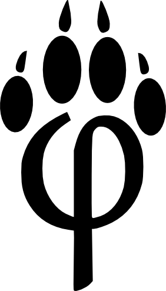
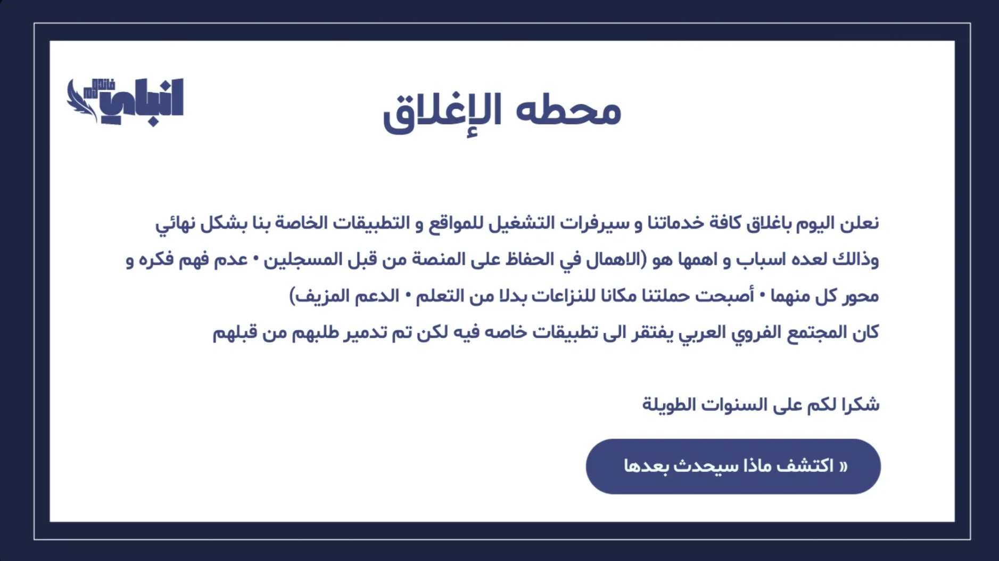
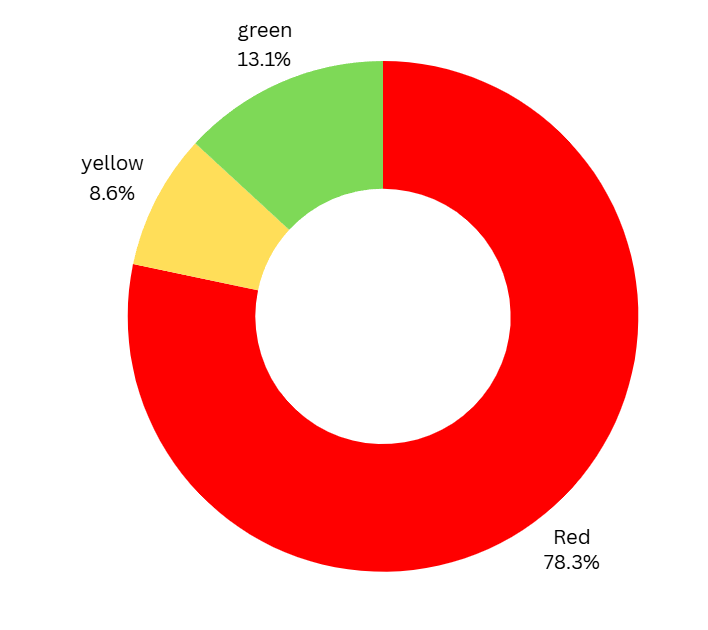
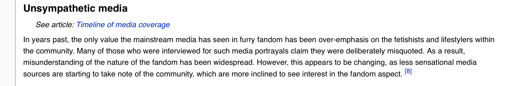
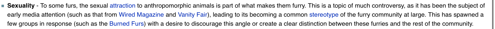
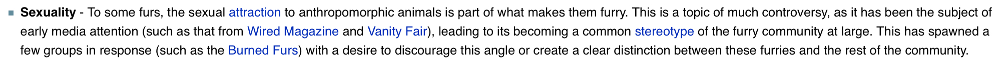

نموذج اولي رقم ١٠
عندة نقاشات او اعتراضات كلم حسابي في برنامج الديسكورد
project1.44
ما هم الفروي (Furries)؟
يُعرّف الفيريز بأنهم "المعجبون بشخصيات حيوانية ذات صفات بشرية، وعلى وجه الخصوص، الشخص الذي يرتدي أزياء تنكرية لتمثيل هذه الشخصيات أو يستخدمها كصورة رمزية (أفاتار) على الإنترنت."
ما هم بيرند فيرز (burned furs)؟
حركة "بيرند فيرز" (Burned Furs) هي مجموعة من الأشخاص داخل مجتمع "الفيريز" يحاولون تمثيل الجانب الذي يعتبرونه "جيداً" أو "نظيفاً" من هذه الهواية. يركز هذا المجتمع على إظهار الجوانب الفنية والإبداعية المتعلقة بالشخصيات الحيوانية، وفي نفس الوقت يحاولون فصل أنفسهم والتبرؤ من أي سلوكيات أو محتويات مثيرة للجدل أو غير لائقة قد تسيء لسمعة الفيريز بشكل عام. هدفهم الأساسي هو تقديم صورة إيجابية ومحترمة للمجتمع أمام الناس والتركيز على الهواية كفن وترفيه مناسب للجميع.
تاريخ بيرند فيرز:بدأ متجمع في سنه 1998 وكانت فكرتهم في تحسين المجتمع الفوري وتحسين نظره الآخرين عنها لكن بدأت تظهر مشاكل داخليه بينهم ومهاجمات من متجمع فوري نفسه وحتى انكشفوا ان فيه أصلا رسامين اباحيين من مجموعه بيرند فيرز و مجموعة قروبات مضادة لهذه فكره لأنهم كانوا يرون مجموعه بيرند فيرز مجموعه نازيه ومن هاذي مجموعات: Freezing Furs, Furry Peace,Parody Groups
نهايه بيرند فيرز: انتهت حزب بيرند فيرز سنة ٢٠٠١ بسبب انقسام متجمع وفتن التي كانت منتشره بينهم وضعف دعم هذا حزب وسمعه سيئه وصاحب حزب وحمله استوعب ان لا يمكنه تغيير متجمع لحاله افضل.
المصادر: ويكا فري
لماذا يعتبرو خطر للمتجمع العربي؟
كيف ينشرو متجمع الفوري : لان معظم متجمع الفوري العربي الحالي يدعون أنهم من جانب جيد مثل فكره (burnfur) وهي مجموعه تحاول ان تحسن متجمع الفيريز ويظهروه على انه متجمع نظيف وآمن للأطفال وتكمن خطورتهم أنهم يحاولون يظهرو متجمع فيري بصوره نظيفه وهو أصله وتاريخه مرتبط بسلوكيات وتوجيهات تتعارض تماماً مع الفطرة السليمة والقيم اخلاقيه. وهذا “تنظيف” يجعل الأطفال والمراهقين المحبين لشخصيات كرتونيه ينجذبون لهذا متجمع ليجدوا انفسهم لاحقاً وسط افكار وممارسات غير الأخلاقية بدون ان يعلمون، ويجعل الأطفال ومراهقين يجعلهم يشوفون أشياء مخله بشكل يومي بدون ان يعرف حتى، وبسبب كل هذا تعرض لأشياء مخله بشكل متكرر ومستمر قد يتغير تفكيرهم مثلا: يصبحو يتقبلون متجمعات المنحطه، تقبل متجمع الفيري، ادمان المحتوى الايباحي
كيف تنغسل دماغ أعضاء المجمتع الفيري؟ : من ابرز طرئق الي يفعلونها لغسل مخ الأعضاء هي نشر منشورات والحث على عنصريه ضد اي شخص يعارض متجمعهم وتشويه سمعه اي شخص معارض لمجتمعهم ويحاول ينصحهم والذي يسمونهم أنتاي الفيريز عن طريق قول عنهم: أطفال،كاهرين فيريز بدون سبب، نازيه، مسببين مشاكل، إلى آخره. وهذا فيديو دليل على هذا شي اظغط هنا لنقلك لفيديو
مصادر:
التعصب الفكري في المجتمع الفيريز: بسبب نشر المحتوى الذي يروج ل افكار متعصبه ضد المعارضين اصبحو متهجمين لأي شخص يحاول نشر الحقيقة عن مجتمعهم وسبهم، وترويج المتجمع الفيريز على انه نظيف مثل ما قلت عن burnfur وحتى تهديدهم، ومن هاذي الأمثله: اظغط هنا لنقلك لفيديو
تواجد الفريز في المتجمع العربي وهل هم فعلا من جانب الجيد؟
توجد متجمعات وحملات حاولت تروج فكره الفيري عند العرب ومثال منهم هو: حملة a4afurry والتي اغلقت بسبب مشاكل الداخليه والأشياء غير اخلاقيه الذي تكلمت عنها، الدليل:

aوهنالك متجمعات أخرى في منصات تواصل الاجتماعي مثل: الديسكورد، الإنستقرام، تيليقرام، تيك توك. هاذي متجمعات معظمها (burnfur) والذي يدعون أنهم متجمع امن لكن هذا مختلف تمام عن ماهم عليه.
تواجدهم في ديسكورد: هنالك خوادم متجمع الفيريز في برنامج ديسكورد و هنالك افعال مخله للاداب مثل تكلم عن الاباحيه وجعلها شي طبيعي في متجمع وترويج متجمع فيري للأطفال القواصر وتعرضهم لمحتوى مضل.
الزوفيليا (zoophila)
علم اجتماع مجتمع الفوري (روست، جي. دي.، 2001) ذكر 2% من أصل 360 مشاركاً أنهم ينجذبون جنسياً للحيوانات.
https://web.archive.org/web/20050302094251/http://www.visi.com/%7Ephantos/furrysoc.html
استبيان الاجتماعي للفوري (إيفانز، كي.، 2008) ذكر 17% من أصل 276 مشاركاً أنهم ينجذبون جنسياً للحيوانات.
https://www.gwern.net/docs/psychology/2008-evans.pdf
https://archive.org/details/2019-hsu/2008-evans.pdf
استبيان الفوري لعام 2008 (أوزاكي، إيه.، 2008) ذكر 18.4% من أصل 6093 مشاركاً أنهم ينجذبون جنسياً للحيوانات.
https://web.archive.org/web/20090224123642/https://www.klisoura.com/ot_furrysurvey2008.php
استبيان الفوري لعام 2009 (أوزاكي، إيه.، 2009) ذكر 13.9% من أصل 9024 مشاركاً أنهم ينجذبون جنسياً للحيوانات.
https://web.archive.org/web/20101123064940/https://klisoura.com/ot_furrysurvey2009.php
استبيان الفوري لعام 2010 (أوزاكي، إيه.، 2010) ذكر 13.6% من أصل 4895 مشاركاً أنهم ينجذبون جنسياً للحيوانات.
https://web.archive.org/web/20110225222046/https://klisoura.com/ot_furrysurvey2010.php
استبيان الفوري لعام 2011 (أوزاكي، إيه.، 2011) ذكر 13.3% من أصل 4365 مشاركاً أنهم ينجذبون جنسياً للحيوانات.
https://web.archive.org/web/20221006214822/http://www.klisoura.com/ot_furrysurvey2011.php
استبيان الفوري لعام 2012 (أوزاكي، إيه.، 2012) ذكر 14.9% من أصل 3267 مشاركاً أنهم ينجذبون جنسياً للحيوانات.
https://web.archive.org/web/20130312072042/https://www.klisoura.com/ot_furrysurvey.php
دراسات عام 2019 (روبرتس، إس.، وآخرون، 2019) ذكر 6.9% من أصل 827 مشاركاً أنهم ينجذبون جنسياً للحيوانات.
https://furscience.com/research-findings/appendix-1-previous-research/furscience-2019/
ذكور الفوري (هسو، كي.، بايلي، جي. إم.، 2019) أظهر 46.71% من أصل 334 مشاركاً علامات تدل على وجود انجذاب جنسي لديهم تجاه حيوانات حقيقية.
https://www.gwern.net/docs/psychology/2019-hsu.pdf
https://archive.org/details/2019-hsu/2019-hsu.pdf
ما هم الفوري؟ (فيك، 2020) ذكر 14.3% من أصل 4611 مشاركاً أنهم ينجذبون جنسياً للحيوانات.
https://web.archive.org/web/20210116160156/https://whatarefurries.com
المعدل الخام للنسب المئوية يبلغ تقريباً 16.1%. والمعدل الموزون للنسب المئوية، مع أخذ أحجام العينات في الاعتبار، يبلغ تقريباً 14.98%.
وهذا شي له صله بالنسبه الزوفيليا عالميه والتي هي 2% والتي اقل من نسبه الزوفيليا بمجتمع الفروي ب اقل من 7.5 أضعاف!
التعرض إلى محتوى الاباحي
ذكر 331 من اصل 334 من ذكور الفروي في استطلاع الرأي ان لديهم دافعاً جنسيا ما لكونهم فروي، ورغم هذه إلاحصائية متنازع عليها، إلا ان الورقة البحثية تنص بالفعل على ان نسبة "الانجذاب الحيونات متشكله بصفات إنسانيه" تبلغ 99.10% (الصفحه رقم ١٥)
المصدر: https://archive.org/details/hsu-bailey-2019furries
وتشير دراسة أخرى إلى أن 87.3% يشاهدون فنون الفوري "الاباحيه"، وإذا أخذنا في الاعتبار نسبة الذكور إلى الإناث في هذا المجتمع، بدلاً من تقسيمها بنسبة 50/50، فإن النسبة تتغير لتصبح 92.25%.
المصادر:https://furscience.com/research-findings/demographics/1-3-sex-and-gender/
https://furscience.com/research-findings/appendix-1-previous-research/furry-fiesta-2013/
https://docs.google.com/document/d/1Sjzsn7BaqFZNk1z2MzRf8HMGT1cNpH6misIfX5h6dro/edit?usp=sharing
في موقع Furaffinity (اكثر موقع مشهور عند المتجمع فوري للرسم ورسومات) في تاريخ في 1/29/2025 تم نشر في موقع 658,116 رسمه sfw وتم نشر 1,384,454 nsfw و 859,450 vore والي هو حرفيا اكثر من sfw ب 200 ألف منشور!!
والي لو سوينا بعض حسابات وجمعنا رسم سيء راح يطلع نتيجه 2.243.904 ولو سوينا مقارنه مقابل عدد رسومات نظيفه الي هي 658,116 وحسبنا نسبه مئوية نحصل نسبه 77.32% تقريبا والذي يحاكي مدى تعرض للمحتوى الاباحي في هذا موقع والذي قد يعرض قواصر لهذا محتوى ايضاً.
المصادر: (والله مصادر عيب إيش اسوي ياخي مقدر أحط مصدر مقرف زي كذا بس والله عظيم إنها صحيحه ;-;)
في تاريخ 6/27/2026 هنالك 522,600 عضو في r/furry. وسب رديت r/furry اكبر سب رديت فروي (sfw) خالي من محتوى الاباحي، مقارتنا إلى 608,200 في r/yiff والي هو اكبر سب رديت (nsfw) للمحتوى الاباحي في رديت فروي، هاذا إذا ما أخذنا في حسبان أعضاء متجمع r/yiff الي داخلين r/furry فبيكون عدد متجمع r/yiff اعلى بكثير من ماهو عليه والي الآن فعليا اعلى بدون أخذ بل حسبان موضوع الي تكلمت عنه.
المصادر:
في ديسبرود (disboard). موقع مشهور لبحث عن سيرفرات في برنامج الديسكرود، كنت لما تبحث عن فئه “furry” كان يعتبر مصطلح يندرج تحت فئه (NSFW) محتوى الاباحي والي له صله ل “18+” “NSFW” “Hentai” “ERP”
المصادر:
https://archive.org/details/opera-snapshot-2025-01-29-212522-disboard.org
منصة ستيم (steam) هو تطبيق ضخم أو موقع إلكتروني لشراء ألعاب. عندما تبحث عن ألألعاب وتكتفي بكتابة كلمه “furry” في بحث ستيم، ستعرض عليك فورا ألعاب مخصصة للبالغين وذات محتوى إيحائي للغاية.
ومن ابرز اقترحات البحث الي تظهر لك لما تبحث بهذه الكلمة في ستيم، أو عند بحث في محرك قوقل عن عبارة “furry games to play”، هي لعبة فيديو “furry feet” وهي لعبة محاكاة مواعدة تركز على فتيشية القدم والتي موجهة لمتجمع الفروي. والي جانبها تظهر لعبة “Amorous” الي أثارت جدل كبير في منصه ستيم.
المصادر: ما أريد أقرفكم بها
وفقاً إلى تحليل يدويّ لقنوات يوتيوب فرويه في 2/10/2025 والي يتضمن من ١٧٨ قناه فرويه، خاصتنا إلى قنوات الذي لدّيها فوق 5000 مشترك، 86.9% من قنوات كان يحتوي (NSFW) محتوى اباحي، بينما 13.1% الفرويه ليس لديها محتوى اباحي.

دليل قراءة صوره:
الاحمر: هاذي هي قنوات الي كانت تعرض محتوى اباحي بشكل مباشر
الأصفر: هاذي هي قنوات الي كانت تحتوي إيحاءات
الأخضر: هاذي هي قنوات نظيفه خاليه من محتوى اباحي أو إيحاءات
المصادر:
ttps://docs.google.com/document/d/10OsUkLI5xbOVHBQVtjSkS0lY_sOBzhGqKG1cwCXbdFk/edit?tab=t.0
التعرض الأطفال
من خلال عدة استطلاعات تم اجراؤها للحصول على تقدير تقريبي لعدد القاصرين في متجمع الفروي، تبين ان المتوسط يصل إلى حوالي %31.38 ممن انضموا للمتجمع وهم تحت سن 18 عاما
المصادر:
https://web.archive.org/web/20090224123642/https://www.klisoura.com/ot_furrysurvey2008.php
https://web.archive.org/web/20130312072042/https://www.klisoura.com/ot_furrysurvey.php
https://furscience.com/research-findings/appendix-1-previous-research/summer-2020/
وهذا يعني أن نتائج هذا الاستطلاعات، بالاقتران مع العدد الفروي التقديري البالغ ٢.١ مليون شخص في متجمع الفروي قاصرين يقع حدود 650,500 شخص. وبالنظر إلى حجم التفاعلات والصور مخصصة للبالغين (الاباحيه) في هذا المتجمع، فإن ذلك يعطي تقديرا يترواح بين 550,000 و 650,000 قاصر حالي أو سابق يرجح تعرضهم للمحتوى الاباحي (NSFW) قبل سن ٢٨ عاما.
المصادر:
https://valor-dictus.com/opinion/2023/03/02/what-is-the-furry-fandom/
على سبيل المثال، تضم تورونتو (اكبر مدينة في كندا) بما يقدر ب 384,295 طفلا تتراوح أعمارهم بين 0 و١٤ عاما. وهذا يعني ان عدد القاصرين المحتمل تعرضهم لكميات كبيرة من المحتوى الجنسي في مجتمع معجبي الفرويين يقل قليلا عن ضعف عدد جميع الأطفال في تورونتو مرتين.
المصادر:
مواضيع نقاشات
Pre-production 6
شوف انت الحين عرفت متجمع وهذا اتضح من شرح في هذا ملف وان متجمع اغلبيها سيئه (تقريبا ٨٠ من متجمع) ولو انت كملت على كونك عضو منهم هذا شي خاطى خلني اشرحلك مثال يوضح لك فكره:
لو كان فيه نار وجنبها افضل مكان لتلعب فيه كرة قدم أنت تريد تلعب بل كرة بس تخاف تطيح في نار بس رغم الخوف تقرر تتهور وتقرب من النار لان مكان هذاك العب فيه ممتع ومع التقريب المستمر يصيبك حرق بسيط جلدك.
وقتها تكون بين خيارين:
١-تترك اللعب وتزعل على متعة الي راحت بس تحمي نفسك من نار وماتحرق
٢- أو تستمر وتتهور لان لعبة ممتعة وماتبغى تتركها على انك تقدر تتحكم في موضوع نار قريبه
وإذا اخترت الاستمرار وتهورت بزيادة وطحت في نار، جلدك بيحترق بالكامل . وقتها لما تهرب وتشوف نفسك بتقول: خلاص مايمديني أعالج نفسي، أكمل لعب أزين لي وأكمل لعب بدون ما تحس بالألم لان الجلد احترق وانتهى احساسه (مثال راح يتعدل ويتغير في مستقبل)
المغزى من المثال: متجمع الفروي ممكن يكون ممتع ك”هواية”، بس خطورته في محتواه. تبدّا تتكيف وتتعود على افكار مخلة (زي ما شرحنا انتشاره في متجمع)، وتصل لمرحلة التبلد اللي ما تحس فيها بضرر هذه الآفكار على أخلاقك لأنك خلاص تعرضت لها لمده طويله وتشوفها شي، التأثر الفكري مايجي فجاة عشان ترفضه) يجي مثل تخسين الماء ببطء. تبدّا بظاهرة يراها المتجمع عادية، ثم تتسامح مع ماهو اكبر، حتى تجد نفسك تتقبل أشياء كنت تراها خط احمر في السباق بدون انك تعرف بهذا تغير اساساً وتشوفه هذي طبيعتك أصلا. حرفيا نفس تجربت الضفدع مع ماء، لو حطيت ضفدع في ماء مغلي راح يقفز فوراً لكن إذا وضعته في ماء بارد وسخنته ببطء، راح يتكيف معى الحرارة تدريجيا حتى يموت بدون ان يشعر بالخطر اساسا. (توضيح أنا لما اقصد تبلد أنا قاعد اشبه لك أعراض الادمان)
(فيه إثباتات عمليه قاعد اشتغل في شرحها)
ازالة التحسس (desensitization) (تحت تطوير)
الخطوه الأولى: يبداً الشخص بمتابعة محتوى القروي على المنصات العامة بحجة اعجابه بالرسم او أزياء fursuit. أثناء التصفح خاصتنا مثل ما انت شفت نسب التعرض للمحتوى اباحي، راح تظهر له منشورات تحمل إيحاءات اباحيه مخلة او تلميحات جنسيه او محتوى جنسي. يشعر في البداية بالرفض والإحساس بل غرابه وتقرف من هذا موضوع، لكن يستمر في متابعة محتوى الفروي لان محتوى مناسب له ومن اهتماماته هذا محتوى الفروي.
الخطوة الثانية: مع الخوارزميات والتصفح مستمر للمتجمع فروي، يصبح محتوى المخل جزءا يوميا مما يراه على شاشته فيبدأ يتوقف عن الشعور بأضيق او رغبة إغلاق الصفحة، يبداً يتبنى تبريرات داخلية مثل: “أنا بس أتفرج ولا ما أمارس هذا أشياء” او “هذا مجرد فن خيالي لا يؤذي احدا” وهنا ينكسر خطه دفاعة اولية، قبل كان يحس بتقرف بس الحين بدأ يتعود على هذا أشياء.
المرحلة ثالثة: يبداً شخص تقبل هذا افكار جنسيه في متجمع ويبدا في تفكيرهم هذا افكار جنسيه غير فطرية على أنها طبيعية فيصير كلما يشوف صوره اباحيه مثلا مايحس بنفس تاثير صدمة لما يشوفها لأول مره المطولة للتوقف عن متابعة بل انه يتقبلها وجودها كجزى “طبيعي” من ثقافه المجتمع.
المرحلة الرابعة: (التبلد) يصل المتابع إلى مرحلة التقلب التام، المنشورات والأفكار الاباحية الشاذة التي كانت تشعره بالقرف صريحا في البداية، أصحبت الآن امراً ماديا عبثا لا يثير فيه اي رد فعل اخلاقيا، فتلاقيه يتقبل الأفكار وممارسات منافية للفطرة تماما دون ان يشعر باللحظة الدقيقة التير تغيرت فيها أفكاره لمجرد انه كان “مجرد مشاهد” لمحتوى هذا المجتمع.
نظرية إزاله التحسس مثبوته علميا وتستعمل في علاجات نفسية للناس الي لها مخاوف (فوبيا) عشان تتعود على شي معين والي ينطبق مع موضوع محتوى جنسي الكبير عند متجمع فروي.
المصادر:
https://en.wikipedia.org/wiki/Desensitization_(psychology)
موضوع “المذنب بل صله” والصروة النمطية للفروي:
كونك تضع ثروة فروي أو تعرف نفسك كـ”فروي”أنت هنا تعرض نفسك للسمعة السيئة تلقائيا, حتى لو أنت كنت شخص محترم وماعندك أي افكار منحرفة وتعتبر من جانب جيد من متجمع فروي. متحمع الفروي واقعيا ب أصبحت الصورة السائده عنه سواء في الميمز أو محتوى المنشور مرتبطة بجانب غير اخلاقي والاباحي، لدرجه ان الموضوع صار يطرح كموضوع للسخرية والضحك من قوة هذا الارتباط.
وخلنا ناخذ مثال يوضح الفكرة:
لو شخص أخذ شعارا مشهورا وله سمعة معروفة بالسوء ولبسه وحطه في صورة شخصية، وهو في الحقيقة شخص مايؤمن بافكارهم ولا يمارس افعالهم؛ تصرفه هذا يبقى خاطئا. السبب ان الناس في الفضاء العام نتعامل مع دلالة الرمز وسمعة المرتبطة به مو مع النية الداخلية للشخص
بنفس الطريقة تماما: لما تحط صورة فروي وتقول “أنا مالي دخل بالجانب السئ” أنت قاعد تسوي تناقض: لأنك تبنيت نفس الرمز الي يثمل هذا المتجمع في اذهان الجميع. وبسلوكك هذا أنت مو بس تضر سمعتك الشخصية، أنت بوجودك كـ”فروي جيد” تعطي غطاء وشرعية للمجتمع كامل انه يتوسع ويطبع وحوده، وتصير جزء من الواجهة الي تتستر على جانب المنحط، وهذا هو الخطأ المباشر في حركة وضع فروة الفروق أو الانتماء لهم.
أشياء تدعم هذا موضوع:

في هاذي صروه الي موجوده في ويكيا فير يوريك ان ميديا غير متعاطف مع متجمع فروي وأنهم يشوفونهم ناس مهووسين ب أشياء جنسيه وان هذا اثر في سمعه فرويين وأنه متجمع فروي فكرته مالها اي علاقه بل أشياء جنسيه

وهنا تلقاهم يقولون من اهتمامات أعضاء يكون ل أسباب جنسيه الي تناقض مع الموضوع الي فوق
الزوفيليا ووش الي يربط بينهم وبين متجمع فروي
مثل ما انت شفت المصادر ونسب رسم الاباحي وزياده نسبه الزوفيليا في متجمع نفسه مقارتنا بل عالم، الحين بيجيك تفسير ليش نسبه الزوفيليا عاليه متجمع فروي: متجمع فروي مشهور برسم الاباحي وانتشار شاسع فيه ودايم تلقى فيه صفات معينه في هاذي رسمات اباحيه وهي ان رسمه نفسها لها صفات حيوانيّة مثل أذاني والذيل والفرو بختصار صفات حيوانية بشكل عام مرسومه بصفات إنسانيه مثل الوقف على رجلين ومشي والتكلم وتفكير او لبس ملابس، لما تشوف مدمنين الاباحيه فرويه تلاقيهم منجذبين لهذا رسمات اكثر من رسومات اباحيه ثانيه وخلوا متفقين بنقطه ان الاباحيه هي ادمان مضر لصحه نفسيه ويودي إلى اكتئاب، بختصار أعراض كثيره وصعب تترك هذا ادمان، المهم تلقاهيم منجذبين لهاذي رسمات فروي اكثر من اباحيه نفسها ولما تشوف متجمع فروي تلقاه حرفيا فكرته عباره عن حيونات بصفات إنسانيه فالواضح الانجذاب للرسوم الاباحيه فرويه هي بسبب صفات حيوانيّة نفسها والي زي ماتعرف انجذاب جنسي للحيونات هو الزوفيليا والي منجذبين للرسم فروي هم بختصار قريبين من الزوفيليا مثل كذا بظبط 👌 مابينهم اي فرق. فيه بعض فرويين انكرو هذا شي قالو أنا مهتم بصفات إنسانيه للفروي طيب سؤال ايش معنى فروي ليش منجذب لها؟ يعني لو انت مهتم بصفات إنسانيه كان اساسا ماتتابع رسم فروي إلا إذا انت مهتم بصفات حيوانيه بس ماتريد تتعرف؟ المهم عشان كذا رسم اباحي المنتشر في متجمع يحث بشكل قوي قوي جدا على افكار الزوفيليا والي متجمع فروي يتعتبر انجذاب جنسي لرسم فروي شي طبيعي (الدليل صروه وموقع موجوده تحت) ويعتبر من ميزات متجمع نفسها فعشان كذا نسب 15% ظهرت في هذا متجمع والي ترا تعتبر مره كبيره مقارتنا نسبه عالم الي هي 2%.

هاذي صروه في موقع ويكيا فروي يوريك ان فرويين بعضهم (الي طبعا الاغلبيه بحسب مصادر الي وردت فوق) مجذوب جنسيا للمتجمع فروي والي هو سبب الي خلاهم يدخلون متجمع فروي والي سبب “نظره نمطيه” (زي ماوريتكم في ملف موضوع ليس نظره نمطيه بل حادثه قاعده تصير في متجمع فروي)، والي طبعا الي سبب ظهور مجموعات مثل بريند فرز الي شرحت قصتهم في بدايه ملف وأنهم توقفوا من متجمع فروي نفسه.
المصادر: ويكيا فروي (صفحه تعريف عن فروي)
مواضيع بسيطه إضافيه
١-الفرويين الأبرياء ليسوا مذنبين بسبب مباشر قي جرائم ومواضيع مخله التي يرتكبها غيرهم، لكن استمرارهم كأعضاء في هذا المتجمع يحملهم مسوولية اتجماعية. هم بوجودهم يكثرون سواد المتجمع ويعطونه حجما، فيصبح لهم صلة بالجانب المنحط حتى لو لم يمارسوه بنفسهم.
1 التسامح المفرط كغطاء وفقدان السيطرة:
متجمع الفروي دائما يظهر بمظهر المتسامح والعاطفيّ، لكن المشكلة ان هذا التسامح المفرط والتقبل الخالي من الحدود واليات الطرد والتبرؤ الصريح يتحول اوتوماتيكيا إلى بيئة آمنة للمنحرفين. الفاسد يعلم انه لن يواجه طرداََ أو محاسبة، بل سيتلقى “تسامحا”، وهذا التسامح هو الذي افقدهم القدرة على التحكم بالجانب المنحط وبسبب السكوت وعدم المحاسبة، تجرا اصحاب السلوكيات السيئة وصاروا يظهرون افعالهم في العلن بدلا من الخفاء وهذا التجاهل جعل التصرف ينقلب من حالة فردية إلى شي معدي يقلده الآخرون، حتى أصبحت البيئة العامة مغلومة بهذه الأفكار بسبب غياب محاسبه. (مدعوم من موضوع burnfur)
الردود على بعض حجج
“كل واحد حر بنفسه”: شوف ياصاحبي الحرية الشخصية تنتهي عندما تخرج إلى فضاء سوشل ميديا ولما تحط رمز أو إسم مشتركا مثل انك تحط “furry” في بايو حسابك. انت حر في تصرفاتك في بيتك ودائرتك المغلقة، بس لما تحط صروه بروفايل فروي أو شعار أو تحط شي يعبر عنهم في بايو برمز متجمع له سمعة وسلوكيات محددة في اذهان الجميع، انت هنا تعديت الحرية الفردية ودخلت في ممارسة العمل الاجتماعي وتمثيل العام، الناس في الإنترنت لا تقرا نيتك ولا تفتش في ضميرك، بل إنهم يتعاملون مع رمز أو صروه بروفايل ودلالته المباشره للمجتمع فروي، وأنت حظيت صروه لرويه أو عبرت عن كونك فروي في بايو اوتوماتيكيا بيجيك نتائج فعلك وسمعته بهذيك لحظه أنت تحت حدود متجمع الإنترنت وغير كذا انت عارف حجم جانب سيء للمجتمع ف أفعالك هاذي تحت موضوع “مذنب بل صلة”
“انت قاعد تعمم مو كل فرويين زي كذا”: أنا عارف هذا شي وما أنكرت ان فيه فرويين جيدين، بس زي ماذكرت لك النسب ومصادر تلاقي جانب سيء مره مره مسيطر على جيد تلقاه نسبه حوالي ٨٠% من متجمع ومتجمع سمعته صارت سيئة بسبب هاذي أشياء، فصار ينطبق عليك نفس موضوع “مذنب بل صلة” فهذا شي غلط انك تستمر في متجمع معروف انه من اكثر متجمعات الي تنشر اباحيه فيها وربطك بها يعتبر برضو غلط لان انت ماتتكلم عن جانب جيد ٥٠% من متجمع انت تتكلم عن حوالي ٢٠% من متجمع جيدين ومثل متجمع كبير زي فرويين تقريبا حوالي ثلاث مليون هذا عدد هائل جدا جدا جدا جدا مقارتنا بل جانب جيد
“العرب والأجانب مختلفين!”:مختلفين بس بل لغه بس ناحيه اختلاف من ناحيه تفكير وهاذي أشياء؟ لا مايختلف العرب والأجانب هم بشر من الأساس الفرق الوحيد هو بيئه نفسها الي عايش فيها، والي بيئة الإنترنت تاثر على الأطفال وأي شخص بالغ، لو مثلا طفل شاف محتوى اباحي في الإنترنت راح يتاثر منه ويدخل في ادمان خطير، والبالغ برضو يمكن يطيح في هذا ادمان، العرب والأجانب هو اختلاف لغات، الأديان جميعها موجوده في جميع جنسيات، وكلهم لهم صفات متقاربه من ناحيه احكام، حتى اساسا لما تكون فروي عربي اغلب محتوى فروي تلقاه من أجانب والي يعلمك ان لغه ماتفرق بل بيئه نفسه الي تاثر حتى ميمز أجانب صارت عند العرب والي بوضحها تحت. (موضوع ذا يدعمه مثال الأول من هذا قسم نقاشات وموضوع المذنب بل الصلة)
يتبع موضوع حجه “العرب والأجانب مختلفين”:
المحتوى الفروي: غالبا كشخص عربي لما تبحث عن فرويين أكيد راح تستعمل كلمه “furry” الي بختصار راح برضو تطلع لك محتوى من متجمع فروي من الأجانب والي هي حرفيا عشان تجيب رسمه او تشوف ميمز ومحتوى فروي او اي شي يخص فروي والي يوريك ان لازم تدخل في جانب الأجنبي عشان تجيب محتوى وان له علاقه للعربي لأنهم كلهم نفس متجمع
ميمز فروي: اغلب ميمز الي تلقاهم وخاصتنا الي منتشر بين متجمع عربي ميمز boy kisser/silly cat وطبعا فكره ميمز جنسيه من الاسم بكبره والي بختصار هو صروه قطه بيضاء لها خطوط حمراء في خدودها، ميمز ثاني هو شخصيه puro بختصار ذئب الأسود والي من لعبه changed والي هاذي أسوء من ميمز boykisser لان هي حرفيا تنشر افكار جنسيه فيتشيه وبيدوفايله، والي يوضح لك ان الأجانب لهم تاثير كبير للعرب وان موضوع هذا جامع بين العرب والأجانب لأنهم متجمع واحد.
أساس متجمع: تأسس من مجموعه ناس “اجنبيه” اساسا ومصطلحات وفكره متجمع من “أجانب” مثل fursona (فورسنا) furry (فروي) fursuit (فروسوت) كلهم مبنيه على أسم إنجليزي أصلا فهذا يعني ان متجمع فروي عربي ايضاً انبنى على متجمع “اجنبي”
تجربة milgram: بعد حرب عالميه ثانيه كانو علماء يريدون يعرفو ليش المانيين كانو مطعيين ل افكار ناريه فقررو يسوون تجربه لعده دول يشوفون هل هذا شي من بيئه نفسها ولا من الأشخاص نفسها وطلعو هذا نتائج 66% من سكان ولايات متحده تاثرو من بيئه وقررو أنهم يعطون و 61% من دول أخرى، وهذا يوريك ان بيئه هي النسبه الأكبر في تاثير ومو الشعب نفسه، والي يعني لو شخص عربي كان في بيئه تروح لشي أكيد راح ينجذب له حتى لو كان ضد مبائده لان راح يتعرض لها بشكل مستمر (مدعوم من إزاله تحسس (desensitization) )
استنائج: متجمع عربي والأجنبي لهم نفس محتوى ونفس الأفكار وكلهم متجمع واحد ولا يمكن تفرقتهم عن بعض زي ماوضحت لك فوق وان متجمع فروي واحد سواء انك عربي او اجنبي.
هل يعني ذلك يجب علينا محاربه فوريين وعنصريه ضدهم؟
الجواب هو لا، لماذا؟ لان هم بشر ولديهم عقل لكن تم زراعه الأفكار مخله في دماغهم وجاهلين عن هذا شي او لديهم لذا لا تحاربهم او تسبهم لان هنالك فرصه لتغييرهم لتفكير الصحيح وفطره صحيحه وقد يسبب لهم تعصب فكري ويودي السب إلى مشاكل بدون اي نتيجه.
كشخص تريد تنشر وعي كيف تنشره وتساعد الفريز ان يتركون متجمعهم الخطر؟
اولاً: لا تناقشهم إذا انت كنت تحت ١٦ لان قد يسبب ذلك تعرضك محتوى خطر او تتاثر من متجمع فيري وتصبح منهم بسبب ترويج عالي لديهم وابتعد عنهم قدر مستطاع
ثانيا: لا تسب او تقذفهم لان هذا شي يسبب مشاكل ولا يودي إلى نتيجه.
ثالثا: لا تستعمل ذكاء اصطناعي كمصدر نقاش صحيح لأنه يخطي في مصدار وإذا وجدت الشخص الذي تناقشه يستعمل ذكاء اصطناعي اخبره انك تناقشه ولا تناقش روبوت بدون روح
رابعا: ابدا نقاش بشكل محترم لكي يسمعون الحقيقه وراعي مشاكلهم نفسيه.
خامسا: إذا واجهت فيري يجادل او يسب بدون اي نتيجه اتركه وشوف لك شخص ثانيه لتنشر الوعي
سادسا: استعمل مصادر صحيحه ودلائل لكي تظهر حقيقه
وفي الخاتمة حبيت أقول لكم حكمها: (الكذبه لو تكررت ألف مره تصبح حقيقة والحقيقة تصبح الكذب، لكن إذا الحقيقة كان معها دلائل أصبحت حقيقة حقيقة والكذب كذبه) هذا موضوع ليس مزح بل مشكله اجتماعيه لازم تنحل وينشر وعي عنها، عشان اخوك الصغير، أطفال مستقبل، عشان المتجمع… كان معكم بروجيكت وسلام عليكم ورحمه الله وبركاته